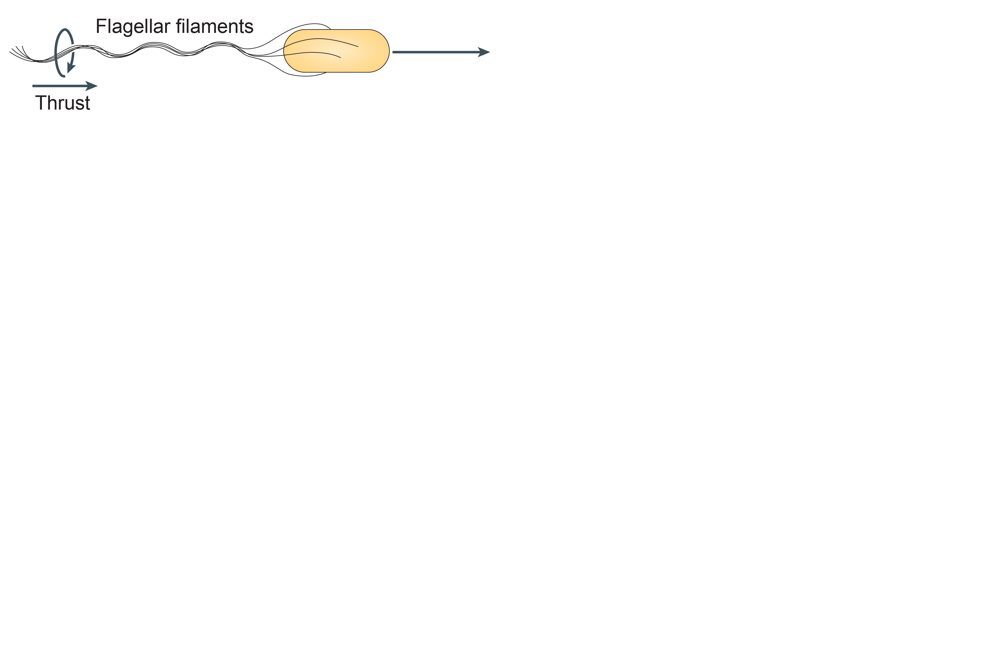
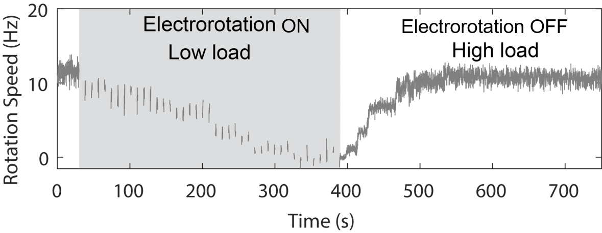
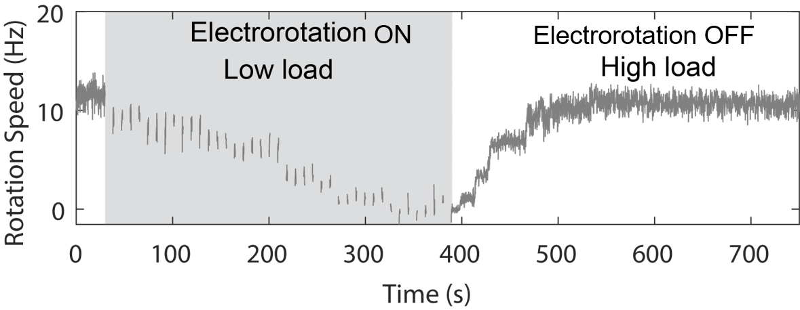

Artwork: Dan Nowakowski/Nicholas Taylor
Do bacterial engines have automatic gearshifts?
University of Utah
October 2022
Navish Wadhwa
Arizona State University
Machines perform specific tasks for us

Cells use molecular machines to perform specific tasks
 ATP synthase
ATP synthase
 Ribosome
Ribosome
 Replisome
Replisome
Do cells have smart machines too?
Yes, they do.
The bacterium E. coli as a model organism

Inhabits guts of mammals
Some strains are harmful, most harmless
Multiple flagella per cell
Bacteria are the smallest self-propelled swimmers

Many bacteria swim by rotating helical flagella
 Slowed down 20X
Slowed down 20X

Reversal of flagellar rotation enables changes in the swimming direction


Why do bacteria swim the way they do?
How do bacteria swim the way they do?
How do bacterial engines cope with changing conditions?
Why do bacteria swim the way they do?
How do bacteria swim the way they do?
How do bacterial engines cope with changing conditions?
Physics of swimming 101

Reynolds number varies wildly between swimmers of different sizes


What effect does Reynolds number have on fluid motion?
Stokes equation governs fluid motion at small length scales
1. Reversibility
2. Superposition
3. Uniqueness
4. Minimum dissipation
5. Reciprocal theorem
Reversible motion gets you nowhere

Two common ways of swimming at small scales
Why do bacteria swim the way they do?
How do bacteria swim the way they do?
How do bacterial engines cope with changing conditions?
A nanoscale motor powers
swimming in bacteria



Wadhwa and Berg, Nature Rev. Microbiol. 2021
Tan et al., Cell 2021
Rotation within the stator complex powers motor rotation

Changes in the rotor enable bidirectional rotation


Why do bacteria swim the way they do?
How do bacteria swim the way they do?
How do bacterial engines cope with changing conditions?
How does the flagellar motor cope with changes in mechanical load?
Automatic gearshift in cars allows the engine to adapt to changing terrains


Automatic gearshift in E. coli allows the motor to adapt to changing loads


What is the physical and molecular mechanism underlying this automatic gearshift?
How can we change motor load?


Instantaneously
Reversibly
Controllably
Electrorotation allows
full control over motor load


Instantaneous
Reversible
Controllable
Electrorotation allows
full control over motor load

A change in load triggers stepwise changes in motor speed


 



The motor adapts to changes
in load by remodeling its stator

Molecular mechanism for torque-dependent unbinding rate

Low torque

High torque
Take home message

Acknowledgements

Howard C. Berg (1934 - 2021)

Rob Phillips (Caltech)
Ethan Garner (Harvard)

Yuhai Tu
(IBM)
Alberto Sassi (IBM)

Sophia Belser (Cambridge)
Jinming Yang (Yale)
Daozheng Gong (Chicago)

Siyu He (Columbia)